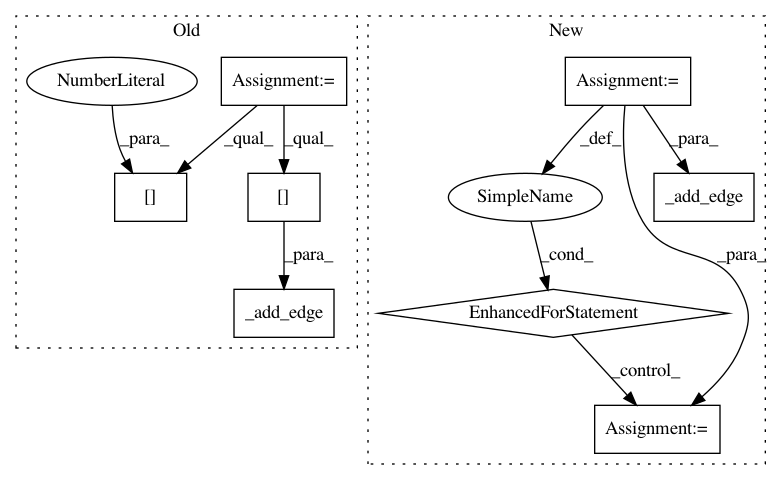

99773d6efd4c081424bdbc3ee9871cdf3e1bdb5c,autokeras/graph.py,Graph,to_add_skip_model,#Graph#Any#Any#,239
Before Change
def to_add_skip_model(self, start, end):
input_id = self.node_to_id[start.input]
output_id = self.node_to_id[end.output]
output_id = self.adj_list[output_id][0][0]
self._add_node(0)
new_node_id = self.node_to_id[0]
layer = WeightedAdd()
single_input_shape = get_int_tuple(start.output_shape)
layer.build([single_input_shape, single_input_shape])
self._add_edge(layer, new_node_id, self.adj_list[output_id][0][0], False)
self._add_edge(layer, input_id, self.adj_list[output_id][0][0], False)
self._redirect_edge(output_id, self.adj_list[output_id][0][0], new_node_id)
return self.produce_model()
After Change
relu_input_id = self.adj_list[self.node_to_id[end.output]][0][0]
// Add the pooling layer chain.
pooling_layer_list = self.get_pooling_layers(conv_input_id, relu_input_id)
skip_output_id = conv_input_id
for index, layer_id in enumerate(pooling_layer_list):
layer = self.layer_list[layer_id]
self._add_node(index)
new_node_id = self.node_to_id[index]
self._add_edge(copy_layer(layer), skip_output_id, new_node_id, False)
skip_output_id = new_node_id
// Add the weighted add layer.
self._add_node("a")
new_node_id = self.node_to_id["a"]
layer = WeightedAdd()
single_input_shape = get_int_tuple(start.output_shape)
layer.build([single_input_shape, single_input_shape])
relu_output_id = self.adj_list[relu_input_id][0][0]
self._redirect_edge(relu_input_id, relu_output_id, new_node_id)
self._add_edge(layer, new_node_id, relu_output_id, False)
self._add_edge(layer, skip_output_id, relu_output_id, False)
return self.produce_model()
def to_concat_skip_model(self, start, end):
In pattern: SUPERPATTERN
Frequency: 4
Non-data size: 8
Instances
Project Name: keras-team/autokeras
Commit Name: 99773d6efd4c081424bdbc3ee9871cdf3e1bdb5c
Time: 2018-01-05
Author: jhfjhfj1@gmail.com
File Name: autokeras/graph.py
Class Name: Graph
Method Name: to_add_skip_model
Project Name: jhfjhfj1/autokeras
Commit Name: 5b3af9ff43bc61f8034f1202a2b57f21c8ee3771
Time: 2018-08-01
Author: jin@tamu.edu
File Name: autokeras/graph.py
Class Name: Graph
Method Name: _insert_new_layers